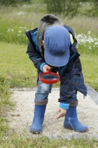
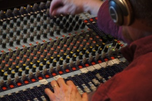
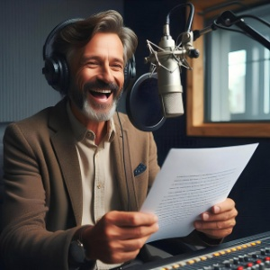

Una vez se han constituido los grupos de trabajo y se han asignado a cada grupo el tema sobre el que trabajar, es hora de comenzar el trabajo en equipo. En la primera fase de la propuesta de trabajo, deberéis realizar un reparto de responsabilidades dentro del grupo. Para ello, se asignará a cada participante uno de los siguientes roles:
Coordinador/Productor
Responsabilidades:
- Organizar y supervisar el trabajo del grupo.
- Asegurarse de que se cumplen los plazos y se alcanzan los objetivos.
- Mediar en caso de conflictos o desacuerdos.
- Mantener la comunicación con el profesor para informar sobre el progreso.
- Dirigir el proceso de grabación en directo del episodio de radio.
- Rellenar en cada sesión de trabajo el diario de trabajo.
Habilidades clave:
- Liderazgo y capacidad de motivar al equipo.
- Organización y gestión del tiempo.
- Comunicación efectiva.
Investigador
Responsabilidades:
- Buscar información fiable y relevante sobre el tema asignado.
- Recopilar datos, estadísticas y ejemplos que enriquezcan el episodio.
- Diseñar y aplicar encuestas o entrevistas para recopilar información adicional.
- Documentar todas las fuentes utilizadas para respetar los derechos de autor.
Habilidades clave:
- Capacidad de investigación y análisis.
- Conocimiento de herramientas de búsqueda en internet.
- Atención al detalle.
Guionista
Responsabilidades:
- Redactar el guion del episodio de radio, incluyendo introducción, desarrollo y conclusión.
- Escribir las preguntas para las entrevistas y los textos para los presentadores.
- Asegurarse de que el guion sea claro, atractivo y adecuado para el formato de radio.
- Colaborar con el editor de audio para ajustar el guion durante la edición.
Habilidades clave:
- Creatividad y capacidad de redacción.
- Estructuración de ideas.
- Adaptabilidad para ajustar el guion según las necesidades.
Editor de audio
Responsabilidades:
- Grabar y editar el episodio de radio.
- seleccionar y añadir efectos de sonido, música y transiciones para mejorar la calidad del audio.
- Asegurarse de que el audio esté claro, sin ruidos y bien sincronizado.
- Colaborar con el guionista y los presentadores para ajustar el contenido (Escaleta).
Habilidades clave:
- Conocimiento básico de edición de audio.
- Atención al detalle y sentido estético.
- Capacidad de resolver problemas técnicos.
Presentador
Responsabilidades:
- Conducir el episodio de radio, presentando los temas y entrevistas.
- Hablar con claridad, entusiasmo y profesionalidad.
- Colaborar con el guionista para ensayar y mejorar el guion.
- Participar en las entrevistas (si es necesario) y asegurarse de que fluyan de forma natural.
Habilidades clave:
- Comunicación oral y capacidad de improvisación.
- Confianza y carisma.
- Capacidad de trabajar en equipo.